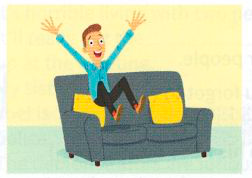
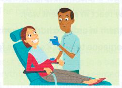
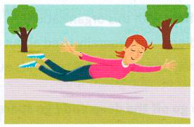
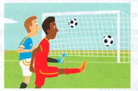
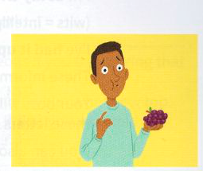
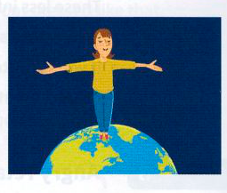

3.2Which idioms do these pictures make you think of?
1

2

3

4

5

6

3.3Correct the mistakes in these idioms.
The child was thrilled for bits to have her photo in the paper.
I felt as if I was floating in air as I ran down the hill into his arms.
Why does Marti look so out of sort today?
Don't make such a fuss. It's not the finish of the world!
Your telephone call has really done my day!
Jill said she was on cloud seven and Jack agreed that he was in ninth heaven.
Why does Mark always have to be such a miserable guts?
Stereotypically, happy footballers say that they are over the sun.
3.4Answer these questions.
Would a piece of good news or a piece of bad news be more likely to make your day?
If you got top marks in an exam, would you feel down in the dumps?
Are people more likely to get a kick out of hot-air ballooning or cleaning their boots?
Do you have to grin and bear it when you are happy or unhappy about something that has happened?
If you are at someone's birthday party, what would be more likely to put a damper on the event – news of the illness of a close friend or a heavy shower of rain?
Do people usually enjoy or not enjoy being in the company of a misery guts?
You have a beautiful new sports car that a colleague is rather envious of. What is your colleague more likely to say out of sour grapes? 'I love its green colour!' or 'Of course, that model is very unreliable!'
A damper is literally a thing put on piano strings to make the sound less loud. How does knowing this help you to understand the idiom using the word damper?
Do you notice anything that a number of the images in the happiness idioms have in common?